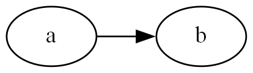
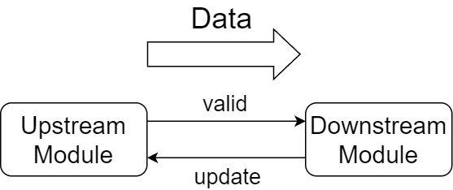
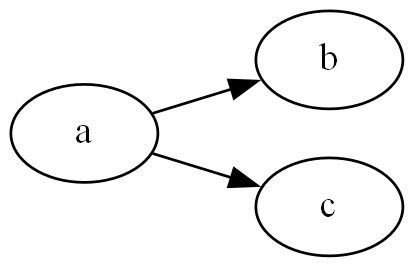
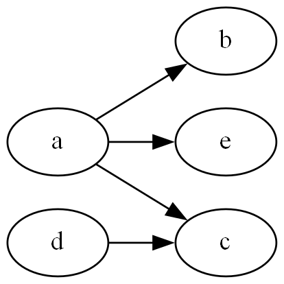

Mid-Level Synthesis
We offer here a tool to help creating a connection between multiple verilog modules.
Methods described in this section is not fully debugged yet. Verilog codes generated using funtionalities in this page may contain unexpected behavior, and thus having precise inspection on output codes is desirable.
Midmodule
Here we wrap a Vmodule object with Midmodule objects.
julia> a = Randmmod("a");
julia> println(typeof(a));
Midmodule
julia> @Randmmod b; # declare Midmodule named "b" as variable `b`Midmodule objects can be handled in a similar manner to that of Vmodule. You may add, for example, ports and always-blocks, using vpush!.
julia> vpush!(a, @always (
counter <= counter + $(Wireexpr(8, 1))
));
julia> vshow(a.vmod);
module a ();
always_ff @( unknownedge ) begin
counter <= (counter + 8'd1);
end
endmodule
type: VmoduleMmodgraph
We handle connections in between Midmodules using Mmodgraph objects.
julia> g = Mmodgraph();Mmodgraph is a callable object, and you may register connections between Midmodules to this object.
julia> g(a => b);We also offer a method to convert Mmodgraph into a graph written in DOT language, and the connections can be visualized this way.
julia> dotgen(g; dpi=196) |> println;
digraph{
rankdir = LR;
dpi = 196;
a [shape=oval];
b [shape=oval];
a -> b;
}Using, for example, Graphviz, the graph below would be generated.

Connect Ports between Verilog Modules
The connection in the example above connected Midmodule a and b. However, there is no data transaction available between the modules. You may explicitly register ports to be connected between Midmodules. Here we construct new connection from Midmodule a to c with an eight-bits wide data line.
julia> @Randmmod c;
julia> g(a => c, [(@oneport @out 8 dout) => (@oneport @in 8 din)]);We declare the connection between a and c using Oneport. Note that at this time the Midmodules do not contain ports declared here. You also need to add the ports to each Midmodule object.
julia> vpush!(a, @ports @out @logic 8 dout);
julia> vpush!(c, @ports @in 8 din);Automatically-Generated Connections
When adding connection to Mmodgraphs, VerilogWriter.jl automatically adds to both upstream and downstream module two ports, which are valid and update lines.
These ports can be used to control timing when a transaction between Midmodules occurs.

valid is the signal driven by upstream module, and when asserted the data lines connected between the modules should contain valid data.
update is the signal driven by downstream module, and asserting the signal tells upstream modules that the data lines can be updated with new data.
This may be similar to the First-Word-Fall-Through model in that downstream modules may process data before returning any signal (such as an acknowledgement signal).
As is often the case with handshaking signals, valid signals must not wait for the update signals. valid should be asserted independently from update (at least from update value at the same clock cycle) in order to avoid creating combinational loop in verilog codes.
Note that VerilogWriter.jl only adds the ports to Midmodules, and thus you need to add to each Midmodule object logics that properly handle the valid and update signals. This also means that you may completely ignore the update and valid signals even when using Mmodgraph (you may need to connect the signals to 0 or 1 to suppress warnings from compilers, though).
To get the name of valid and update ports, you may call nametolower (for downstream facing ports) or nametoupper (for upstream facing ports) method with enum value imupdate or imvalid.
julia> alb = @always (
$(nametoupper(imupdate)) <= 1; # always update
if $(nametoupper(imupdate)) & $(nametoupper(imvalid))
recv_count <= recv_count + $(Wireexpr(8, 1))
end
);
julia> vpush!(b, alb);Synchronizing Transactions
g::Mmodgraph in the above example currently generates the graph below.

When connecting more than one downstream Midmodule to one upstream Midmodule, VerilogWriter.jl automatically adds synchronizing logic to Mmodgraph. valid and update signals are modified automatically and a transaction between a and b/c does not complete unless both b and c assert update signal to a. From upstream module's (a's) perspective, b and c look like a single module which has one update and one valid port.
julia> ala = @always (
$(nametolower(imvalid)) <= 1;
if $(nametolower(imvalid)) & $(nametolower(imupdate))
send_count <= send_count + $(Wireexpr(7, 1))
end
); # the same `valid` and `update` wire is connected to both `b` and `c`
julia> vpush!(a, ala); vshow(a.vmod);
module a (
output logic [7:0] dout
);
always_ff @( unknownedge ) begin
counter <= (counter + 8'd1);
end
always_ff @( unknownedge ) begin
valid_to_lower_port0 <= 1;
if ((valid_to_lower_port0 & update_from_lower_port0)) begin
send_count <= (send_count + 7'd1);
end
end
endmodule
type: VmoduleThe same applies to cases where a single downstream Midmodule is connected to multiple upstream Midmodules. Note that ports other than valid and update in downstream Midmodule cannot be connected to multiple upstream ports, which is the same as connecting ports in raw verilog module instances. For now no warning and error is returned from VerilogWriter.jl even in such erroneous cases, and it can be detected, for instance, applying linter on generated verilog outputs.
julia> @Randmmod d;
julia> g(d => c, [(@oneport @out 32 douttoC) => (@oneport @in 32 dinfromD)]
); # must not connect to `din` in `c`, which is already connected to `a`
julia> vpush!(c, @oneport @in 32 dinfromD); vpush!(d, @oneport @out 32 douttoC);
julia> vpush!(c, @always (
$(nametoupper(imupdate)) = 1
)); # connected to `update` of both `a` and `d`Suppress Synchronization in Connecting Midmodules
There are cases where multiple connection from one Mmodule should be completely independent from one another. In such cases you may wrap connection in Midport to separate connections to multiple groups.
julia> @Randmmod e;
julia> @assert 1 != defaultMidPid; # currently defaultMidPid == 0
julia> vpush!(e, @oneport @in 8 dinfroma);
julia> g(Midport(1, a) => Midport(defaultMidPid, e),
[(@oneport @out 8 dout) => (@oneport @in 8 dinfroma)]
); # connect `a` at Midport id 1 to `e`Currently g generates the graph below:

Connections between Midports is not synchronized if they have different Midport id (a member::Int of Midport). In the example above, a::Midmodule is connected to three Midmodules, which are b, c and e. Connection between a and e is assigned Midport id 1, while connection between others are assigned defaultMidPid (this port id is assigned to the connection which is registered to Mmodgraph without explicitly specifying port id). Therefore, transaction between a and b/c is synchronized through valid and update independently from transactions between a and e. As a consequence a needs to include additional logic to handle valid and update signal for Midport whose id is other than defaultMidPid.
julia> vpush!(a, @always (
if $(nametolower(imvalid, 1)) & $(nametolower(imupdate, 1))
$(nametolower(imvalid, 1)) <= 0;
else
$(nametolower(imvalid, 1)) <= 1
end
)); # valid and update associated with Midport(1, a)Generate Vmodule Objects
After adding logics to each Midmodule, you may generate a list of Vmodules exported from Mmodgraph.
julia> vmods = layer2vmod!(g);
julia> println(typeof(vmods));
Vector{Vmodule}At the head of the exported list of Vmodules is the top level Vmodule which represents the whole Mmodgraph, and the rest are the modules which are instanciated inside the top module. You may call vfinalize.(vmods) to further conduct wire width inferences and wire declarations.
Port Lifting
Each Midmodule objects can have (verilog) ports that are not connected to other Midmodules. These ports are automatically added to the top level Vmodule when calling layer2vmod! and is accessible from outer verilog modules.